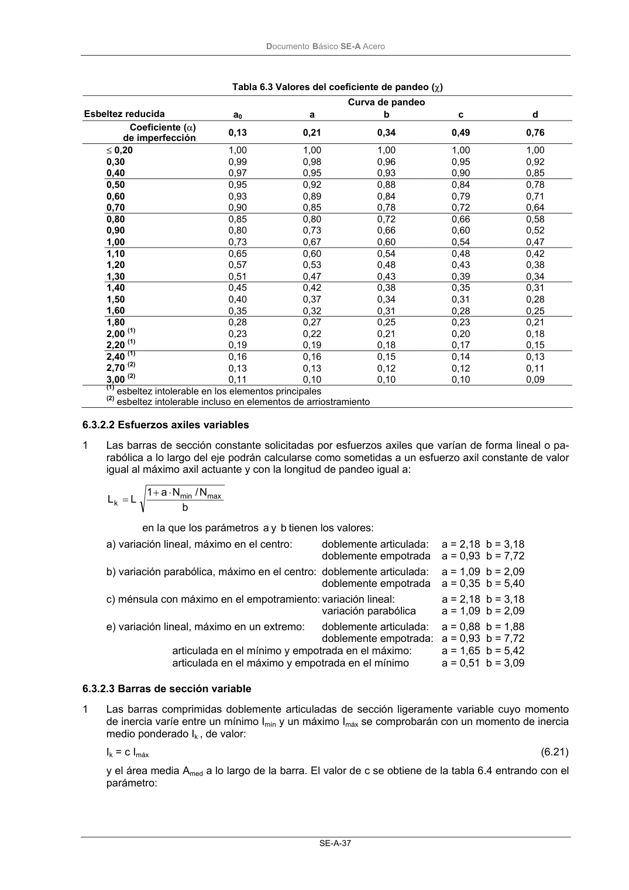

DB-SE-A Acero · edición 2007-10-23 · capa oficial
Documento DB-SE-A-oficial · SHA-256 del PDF 9ed9ea694aabfbda3bfbbef40dfe9223fde05d13c35bc2ba9751e5a96a22a64f
Copia fiel del PDF fuente · Fuente oficial
Ficha de la disposición en la fuente oficial
Formatos: JSON del segmento · Markdown
6.3.2.2 Esfuerzos axiles variables 1 Las barras de sección constante solicitadas por esfuerzos axiles que varían de forma lineal o pa- rabólica a lo largo del eje podrán calcularse como sometidas a un esfuerzo axil constante de valor igual al máximo axil actuante y con la longitud de pandeo igual a: b N / N a 1 L L max min k ⋅ + = en la que los parámetros a y b tienen los valores: a) variación lineal, máximo en el centro: doblemente articulada: a = 2,18 b = 3,18 doblemente empotrada a = 0,93 b = 7,72 b) variación parabólica, máximo en el centro: doblemente articulada: a = 1,09 b = 2,09 doblemente empotrada a = 0,35 b = 5,40 c) ménsula con máximo en el empotramiento: variación lineal: a = 2,18 b = 3,18 variación parabólica a = 1,09 b = 2,09 e) variación lineal, máximo en un extremo: doblemente articulada: a = 0,88 b = 1,88 doblemente empotrada: a = 0,93 b = 7,72 articulada en el mínimo y empotrada en el máximo: a = 1,65 b = 5,42 articulada en el máximo y empotrada en el mínimo a = 0,51 b = 3,09
